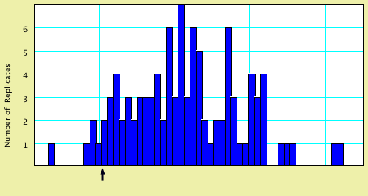

Mesquite: Show Percentile |
August 2005
Show Percentile calculates and displays percentile values in histograms.
For example, the lower (left) tail of the following distribution has the 0.01 percentile marked, as exactly 1 of the 100 values is less than or equal to the marked value.
Show Percentile shows that value that corresponds to the specified percentile. However, if there is no value that exactly corresponds to a percentile, then it shows the value that corresponds most closely to the requested percentile, but that is less than the requested percentile. For example, the nearest two percentiles in this distribution to 0.001 would be either 0.0 (including 0 values) or 0.01 (including 1 value); Show Percentile chooses 0.0, as that is the nearest value that does not exceed the requested percentile:
The 0.05 lower percentile for this distribution is shown below:

This might also be the distribution shown if you requested 0.06, as the nearest
percentiles for that value are 0.05 or 0.07, and so Show Percentile would choose
0.05.
Full details of the percentiles displayed can be seen by touching the Text tab of the histogram window.
© David Maddison & Wayne Maddison, 2005